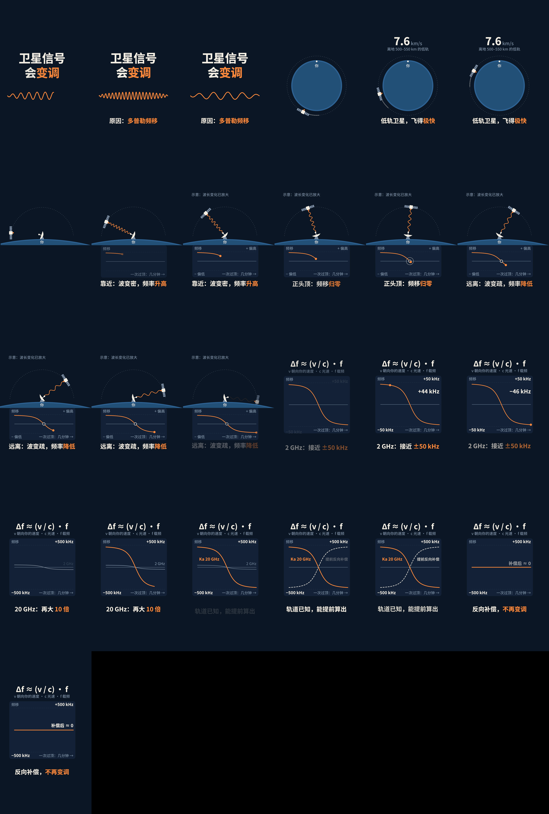
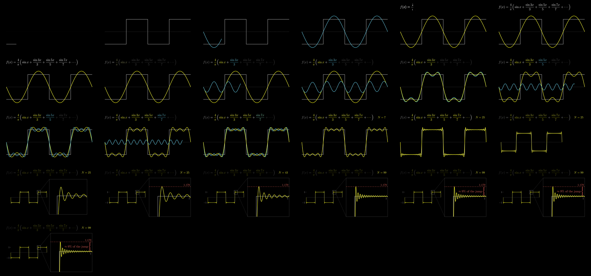
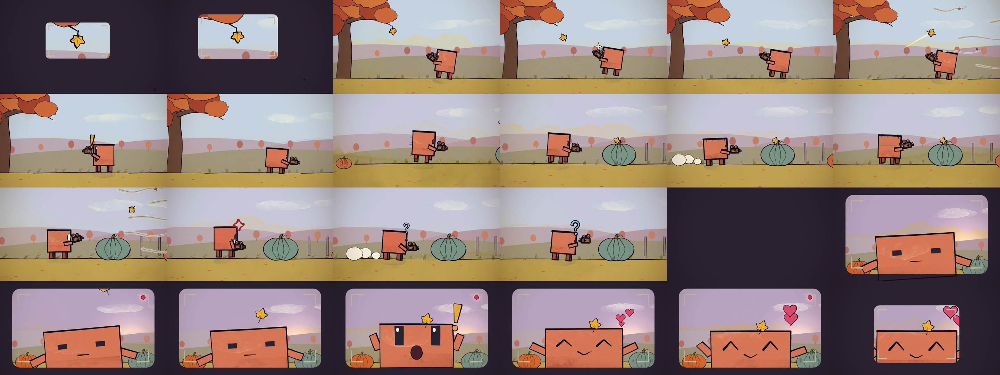
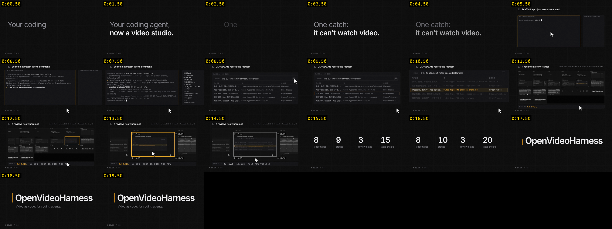

Idea first先想立意
Two or three concept cards, each with one frame and a hook, before a line of code. It names what every other video on the topic looks like, and steers away.写代码之前，先出两三张立意卡，每张配一帧画面和一个钩子。它会先说出同题视频都长什么样，然后避开。
playbook/12-ideation.mdOpen source · a controllable workflow for making videos with code开源 · 用代码做视频的可控工作流
You direct. AI makes the film.你当导演，AI 做片。
Say what you want in one sentence, and a coding agent such as Claude Code or Codex writes the code and renders the film. It can be controlled, repeated and fitted into your own workflow. Every step shows up in Studio: point at a shot, say what to change, and compare the two cuts.说一句想做什么，Claude Code、Codex 这样的 agent 写代码、渲染成片。可控、可重复，接得进你自己的流程。每一步都摆在 Studio 里：指着镜头说一句，它去改，改完两版对照着看。
Every star is a film: the 43 style samples, in orbit每颗星都是一支片子：43 种风格的样片
55 shots from 16 films16 支片子里的 55 个镜头
Every shot here is from a film made this way, rendered by code. Click one to enlarge it, or ride through them in a single take, from a galaxy down to a point of light.这些镜头都出自用它做的片子，由代码渲染。点一个放大看；也可以跟着镜头走一遍，从一个星系推到一点光，中间不切。
01Studio · the whole production in one windowStudio · 整个制作流程在一个窗口里
On top of the skills and the command line, we built Studio, a visual window that makes it easier to keep the whole making of a film in hand: where each film has got to, the notes you point at the picture, the calls only you can make, and a conversation with the agent on this machine.在原来的 skill 和命令行之上，我们做了可视化的 Studio 窗口，让你更方便地掌握整支片子的制作流程：每支片子走到了哪，指着画面写下的点评，只有你能拍板的事，还有和这台机器上的 agent 的对话。
The row along the top is the film's steps: concept, outline, storyboard, sound, first draft, delivery, each saying who is doing what. The column on the left is what to look at; the films waiting for you come first.顶上一排是这支片子的几步：立意、大纲、分镜、声音、初版、交付，每一步写着谁在做。左边一列是看什么；等你的片子排在最前。
A keyframe per shot, a timeline for the first draft. Select a shot, a second or a span, write a line and press “Add”: it becomes a note on that very place.分镜每一镜一张关键帧，初版是一条时间线。选中一个镜头、一秒或一段，写一句，点“加一条”，就是写给那一处的意见。
Notes gather in the right-hand column, each marked not sent, sent, or picked up. A summary shows them before anything goes; your words land in the project's REVIEW.md, and the agent carries on from them.意见攒在右边一列，每条写着还没发、发了，还是已经被取走。发出去之前先列一遍；你的原话记进项目的 REVIEW.md，agent 照着往下做。
At the concept, the storyboard and the draft, what you decide is a few cards with the recommended one chosen. Change it with a click, or leave it, and send once.到了立意、分镜、初版，要你定的是几张卡，推荐的已经选好。点一下就换，不动就照推荐，最后发一次。
When the agent attaches both cuts to your note, open it in Cut → Revisions. Play the same span in both cuts, switch which soundtrack you hear, then accept the revision or send another note.agent 把两版成片关联到你的意见后，从成片 → 复审打开。两版对齐播放，可切换试听音轨，再选通过或针对这一版继续提意见。
Click the OVH Studio icon (the installer puts it in your applications), tell your agent “open Studio”, or run bin/vh studio: the same window each time. In English or Chinese, in three dark themes.It reads and writes the project's own files. A new film still starts from a sentence to the agent, and shows up here as soon as it exists.点 OVH Studio 图标（安装脚本会把它放进你的应用程序），对 agent 说“打开 Studio”，或者运行 bin/vh studio：每次都是这一个窗口。中文或英文，三套深色主题。它读写的就是项目里的文件。新片子仍从对 agent 说的一句话开始，一建好就出现在这里。
Walk-through film · 5:17 · with sound介绍片 · 5 分 17 秒 · 有声
Installing it, three ways in, how a real 33-minute film was made step by step, and how it was reviewed in Studio. The walk-through was made with it too. Chinese narration and subtitles.怎么装，三种用法，一支 33 分钟的真片怎么一步步做出来，在 Studio 里怎么审。这支介绍片也是用它做的。中文配音、中文字幕。
02Get started快速开始
curl -fsSL https://raw.githubusercontent.com/ZLHad/OpenVideoHarness/main/install.sh | bashbin/vh studio in the install folder), choose your signed-in Claude Code or Codex in the agent column, and click Set it up if prompted.从应用程序打开 OVH Studio（或在安装目录运行 bin/vh studio），在右栏选已登录的 Claude Code 或 Codex，看到适配器提示时点装上。cd ~/OpenVideoHarness && bin/vh studiocd ~/OpenVideoHarness && codexcd ~/OpenVideoHarness && claude~/OpenVideoHarness) as the project.在 Claude Code 或 Codex 的桌面 App 里，把安装目录（~/OpenVideoHarness）当作项目打开。npx skills add https://github.com/ZLHad/OpenVideoHarness --skill open-video-harnessclaude plugin marketplace add ZLHad/OpenVideoHarness --sparse .claude-plugin plugins/open-video-harnessclaude plugin install open-video-harness@open-video-harnesscodex plugin marketplace add ZLHad/OpenVideoHarness --sparse .agents/plugins --sparse plugins/open-video-harnesscodex plugin add open-video-harness@open-video-harnessA pointer: on first use it asks before installing the workbench itself.装上的只是指针：第一次用时先征得你同意，再装工作台本身。
Needs Git, Node.js 22+, Chrome, FFmpeg, Python 3 with uv, and Claude Code or Codex. About 400 MB on disk; the 37 read-only reference repos come when an agent first needs one. Step-by-step guide · China network需要 Git、Node.js ≥ 22、Chrome、FFmpeg、Python 3 和 uv，以及 Claude Code 或 Codex。约占 400 MB；37 个只读参考仓库等 agent 用到时再拉。分步教程 · 国内网络
Times are for a 30-second film. The quick request on this page goes straight through to a checked video.时间按 30 秒的片子算。这页的快出示例会直接做到检查完的成片。
03Why it exists为什么做它
Plenty of tools can turn a sentence or two into a video. The hard part is doing it under control, repeatably and at volume, inside your own workflow.一两句话让 AI 做出一支视频，现在很多工具都行。难的是可控、可重复、能成批地做，还能接进你自己的流程。
The same model can be brilliant once, then lose the pacing, glow everything and invent numbers the next time. Engines like HyperFrames, Manim and Blender turn code into frames. They don't choose the idea, the storyboard, the script or the style, and can't tell whether the film is any good.同一个模型，这次惊艳，下次就可能节奏乱、满屏发光、数字乱编。HyperFrames、Manim、Blender 这些引擎负责把代码变成画面；立意、分镜、脚本、风格它们不管，片子好不好也判断不了。
OpenVideoHarness is the missing layer: the process and the checks, from idea to final cut, written as docs an agent follows. It stays light on purpose: a few hard floors, and defaults that a good idea can overrule.OpenVideoHarness 补的就是这一层：从立意到成片的流程和检查，写成 agent 能照着做的文档。它故意写得很轻：几条底线不让步，其余都是默认，好点子可以反着来。
drives驱动 ↓
04What it adds它补上了什么
Two or three concept cards, each with one frame and a hook, before a line of code. It names what every other video on the topic looks like, and steers away.写代码之前，先出两三张立意卡，每张配一帧画面和一个钩子。它会先说出同题视频都长什么样，然后避开。
playbook/12-ideation.mdScience shorts, 3Blue1Brown-style explainers, launch films, music videos, data stories, paper talks, hand-drawn shorts, meme edits, long explainers, software tutorials, and your own footage and photos.科普短视频、3Blue1Brown 风格讲解、产品发布片、MV、数据故事、论文讲解、手绘短片、梗图快剪、长讲解、软件使用教程，还有你自己的素材和照片。
video-types/The direction and the first draft, and the storyboard too when the film is long, heavy to render or paid. Name anything else you want to own: the hook, the style, the voice, the cover. Or say "quick" and it runs straight through.创意方向和初版；片子长、渲染重或要花钱时，再加分镜。还想亲自定别的，点名就行：钩子、风格、配音、封面。说"快速出一版"，它就一口气做完。
CLAUDE.md · director modeAn agent can't watch video. So it reads contact sheets against a 20-point checklist, measures the audio, and a fresh-context reviewer scores the draft on 8 points.agent 看不了视频，所以它看联系表、对照 20 条清单改，用数据查声音；再由全新上下文的独立评审按 8 项给初版打分。
templates/TASTE_CHECKLIST.mdChinese and English voiceover, two-language subtitles, a score and 21 sound effects written as code, every cue on its frame, mixed to −14 LUFS.中英配音、双语字幕，配乐和 21 个音效都用代码写，每个卡点落在它那一帧，混音到 −14 LUFS。
bin/vh tts · music · sfx · mix · qaNo randomness, no clock, no state carried between frames. Same t, same pixels, so any frame renders alone, in parallel, in any order, and can be checked. Drag the slider, then render the frame again.不用随机数、不读时钟、帧与帧之间不留状态。同一个 t 永远是同一帧，所以任何一帧都能单独渲染、并行渲染、乱序渲染，也能抽查。拖动滑块，再把这一帧重渲一遍试试。
CLAUDE.md · hard rule 1A style library to borrow from, each with a rendered sample. 3D models go in a Three.js layer under the 2D; when a shot needs real glass or a million stars, the agent drives Blender from Python.风格库可以借来用，每种都带实际渲染的样片。3D 模型放进 2D 下面的 Three.js 层；要真玻璃、上百万颗星时，agent 写 Python 驱动 Blender。
styles/ · engines/blender.md05How it works工作原理
video-types/12 workflows12 类工作流playbook/13 know-how docs13 篇通用知识styles/43 styles43 种风格recipes/80 recipes, 24 shot cards80 张配方、24 张镜头卡templates/11 project files11 个项目模板cases/ showcase/15 case studies, 5 films15 个案例、5 支样片bin/vhnew · edit · render · check · gate · studio · footage · image · tts · musicprojects/<date>-<slug>/you decide, in Studio or on a review page你拍板，在 Studio 里或一页审阅页上the agent checks itselfagent 自查a request, moving through一条需求走过的路06Capability map能力地图
One CLI, bin/vh, with 74 commands. Each name below is one; any command takes -h, and bin/vh commands lists them by stage.一个命令行 bin/vh，74 条命令。下面每个名字都是其中一条；每条加 -h 看用法，bin/vh commands 按阶段列出全部。
knowwhat the repo already knows about a few words: a recipe, a component, a style, a case仓库里关于几个词已经有什么：配方、组件、风格、案例scouta topic on the platforms before you pick it, and your film's numbers after; public interfaces, no login选题前看题目在各平台的样子，发出去后看片子的数据；只用公开接口，不登录ref · breakdownreferences on record; a reference film taken apart, its cuts against its beats参考记进台账；拆一支参考片，看切点落在节拍的哪里weba web page read in a headless browser and kept with its URL and date, to check facts against用无头浏览器读网页，连同网址和日期存下，拿来核对事实conceptseeded extras for the concept cards at gate ①关卡 ① 立意卡的可选配件footagereal footage from Internet Archive, Wikimedia Commons and NASA: only the seconds you need, its licence on record从 Internet Archive、Wikimedia Commons、NASA 取真实影像：只取要用的几秒，许可记下来image genpictures from Nano Banana or Codex: an estimate first, each paid call held against the budget用 Nano Banana 或 Codex 生成图：先估价，每次付费调用先按预算占住sfx · bgm · sounda sound library: your packs and Openverse, licences and credits on record声音库：你自己的音效包和 Openverse，许可和署名都记下castcharacters, props and sets as settled reference pictures, sent along when they are drawn again角色、道具、场景的定稿参考图，再画它们时一起带上model3d · hdria 3D model read before it goes in; CC0 light and sky from Poly Haven3D 模型放进来前先读一遍；从 Poly Haven 取 CC0 的光照和天空assetsone ledger for every file: where it came from, its licence, its cost; checked before delivery每个文件记在一本台账里：从哪来、什么许可、花多少钱；交付前检查editan edit list: pages, images, footage, other films and sound in a row; gate ②'s animatic as grey slates剪辑表：页面、图片、实拍素材、别的片子和声音排成一列；关卡 ② 的 animatic 先是灰卡components8 motion components: a spring scene, a page turn, paper seams, a chapter bar, a build-up, a film finish, a tutorial's stage, a source plate8 个动效组件：弹簧场景、翻页、纸面转场、章节进度条、逐渐建成、成片收尾、教程操作台、出处铭牌recipes80 shot recipes, 11 whole-film skeletons, 24 shot-grammar cards80 张镜头配方、11 条全片骨架、24 张镜头语法卡--threecanvas-film's Three.js layer: GLB models under the 2D, their clips on the narration's wordscanvas-film 的 Three.js 层：GLB 模型画在 2D 下面，动作挂在旁白的字上tts · music · mixvoiceover, a score written as code, the mix配音、用代码写的配乐、混音studio · gateStudio's window: every film, its stops, your notes and the agent; a stop for your sign-off in one commandStudio 的窗口：所有片子、每一站、你的点评和 agent；一条命令停下来等你拍板check · determinismthe film against its brief; each frame really a function of t对着 Brief 查成片；查每一帧是不是只由 t 决定renderparallel, resumable chunks; --motion-blur N for sub-frame blur, --alpha for a transparent film; an edit list redraws only what changed分块并行、能续渲；--motion-blur N 加子帧运动模糊，--alpha 出透明底；剪辑表只重画改过的部分patch · versionsa few seconds redrawn in a finished film; compare renders, or go back只重画成片里的几秒；对比各版，或者退回deliver · cleanthe copy to upload; a finished project's intermediates cleared出上传用的版本；清掉做完的项目里的中间文件bin/vh doctor says which of the 44 outside programs, packages, models and services this machine can use.bin/vh doctor 告诉你这台机器能用上 44 个外接模块里的哪些。
07The intro film · 103 s · with sound介绍片 · 103 秒 · 有声
The opening is path-traced in Blender, driven by Python: 1.18 million stars, 475 frames. HyperFrames and Three.js take over from 15 s. The score and its 124 sound events are code too. It streams from the repo's GitHub release (297 MB) once you press play.开场由 Python 驱动 Blender 路径追踪：118 万颗星，475 帧。15 秒起交给 HyperFrames 和 Three.js。配乐和 124 处音效也是代码写的。按下播放才从仓库的 GitHub Release 载入（297 MB）。
08Showcase · hover to preview, click for sound作品 · 悬停预览，点击带声音播放
An agent can't watch video. It reviews contact sheets: frames tiled with their timecodes.agent 看不了视频，它审的是联系表：按时间码平铺的一帧帧画面。

contact sheet联系表Why does a low-orbit satellite's signal change pitch?为什么低轨卫星的信号会"变调"？HyperFrames · 24.8 s · 1080×1920 · Chinese voice, two-language subtitlesHyperFrames · 24.8 秒 · 1080×1920 · 中文配音，双语字幕

contact sheet联系表Building a square wave from sine waves用正弦波搭出方波Manim · 25 s · English narrationManim · 25 秒 · 英文旁白

contact sheet联系表Clawd tries to film a falling autumn leafClawd 想拍下一片飘落的秋叶p5.brush · 12 s · no words, score and foleyp5.brush · 12 秒 · 无台词，配乐和拟音

contact sheet联系表A short launch film for OpenVideoHarness itself给 OpenVideoHarness 自己做的发布短片HyperFrames · 20 s · a sound for every moveHyperFrames · 20 秒 · 每个动作都有声音
09Style library · point at one, click to hear it风格库 · 指着看，点开听
Every sample says the same line, “Every frame is code.” Only the style changes. Left alone, AI video drifts to one look: dark background, glow, glass cards.每段样片演的都是同一句“每一帧，都是代码”，不同的只有风格。放任不管，AI 视频会趋向同一张脸：暗底、发光、玻璃卡片。
80 shot recipes, 11 whole-film skeletons, 24 shot-grammar cards and 8 motion components, each move with a contact sheet like these. Click one to enlarge it.80 张镜头配方、11 条全片骨架、24 张镜头语法卡、8 个动效组件，每个动作都配这样一张联系表。点开放大。
ui-stagesoftware tutorials rebuilt in code: typing, keyboard, cursor and real captures教程操作台：打字、键盘联动、光标和真截图回放，不录屏page-turna book page turns over; the turn is the cut翻页：书页翻过去，翻页本身就是剪辑点decode-typea recipe: type that decodes into place, then stays long enough to read一张配方：字解码到位，再停够读完的时间chart-morpha recipe: one chart becomes another without a cut一张配方：一种图表不切镜地变成另一种10In practice真实使用
The author publishes films made with OpenVideoHarness on Douyin (TikTok in China) and Bilibili.作者把用 OpenVideoHarness 做的片子发在抖音和 B 站。
Every film on this page was made the way you would make yours: an agent, this repo's docs and one request. Each folder keeps the record: the request word for word, the storyboard, every review round, and how long it took.这一页上的每支片子，做法都和你做自己的片子一样：一个 agent、本仓库的文档、一句需求。每个目录都留着记录：需求原话、分镜、每一轮审阅、花了多久。
cover-preview covers at Bilibili, Douyin, YouTube and Xiaohongshu feed sizes按 B 站、抖音、YouTube、小红书的信息流尺寸看封面
deliver the copy to upload, sized to a platform's limit上传用的版本，按平台的大小上限出
From the announcement of the 2026 Nobel Prize in Physics to a published science explainer, made with the harness.从 2026 年诺贝尔物理学奖公布，到一支用这套工作台做的科普片发出来。
The hand-drawn short (showcase 01): about 40 minutes of the agent's active work, with three review rounds and about 20 fixes logged, not counting a pause for an API rate limit.手绘短片（样片 01）：agent 实际工作约 40 分钟，三轮自查，记下并修好约 20 处问题，不算中途因 API 限流停下的时间。
11FAQ常见问题
open-video-harness skill for Codex and Claude Code, so either agent can find the workbench from another folder.能。在 Studio 选 Codex，发送第一条需求前可点选模型和思考深度，查看账号能用的选项。安装脚本也给 Codex 和 Claude Code 注册 open-video-harness skill，从别的目录也能找到工作台。bin/vh footage takes the seconds you need from Internet Archive, Wikimedia Commons and NASA with their licences on record, and an edit list cuts them in. Realistic people and a live-action look need generated video, with code drawn on top. Editing footage you shot yourself (talking heads, interviews, vlogs) is type 09, still experimental.档案和公有领域的影像可以：bin/vh footage 从 Internet Archive、Wikimedia Commons、NASA 只取要用的几秒，许可记在台账里，再用剪辑表剪进片子。写实人物、实拍感要靠生成式视频，再用代码叠加。剪你自己录的素材（口播、访谈、Vlog）是第 09 类，还在试验。12Contact联系
Star the repo, or send a film you made with it.给仓库点个 Star，或者把你用它做的片子发过来。